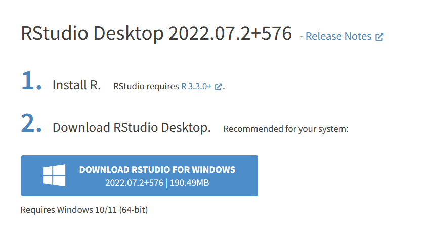
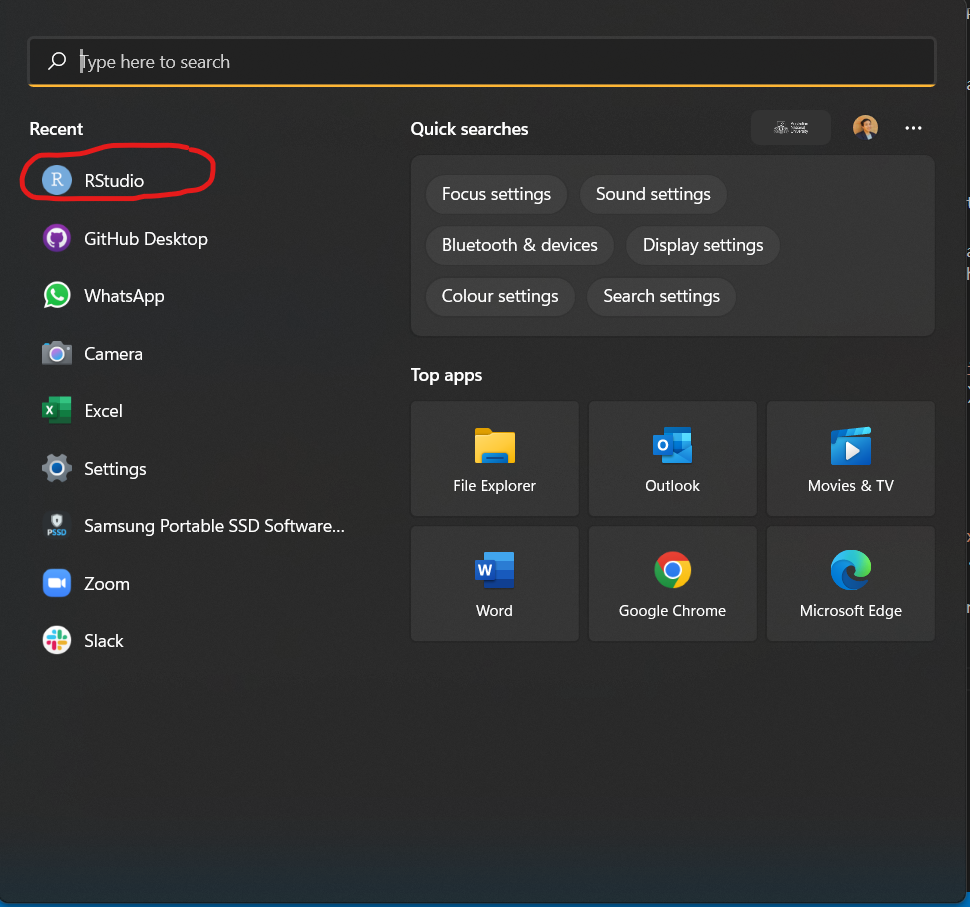
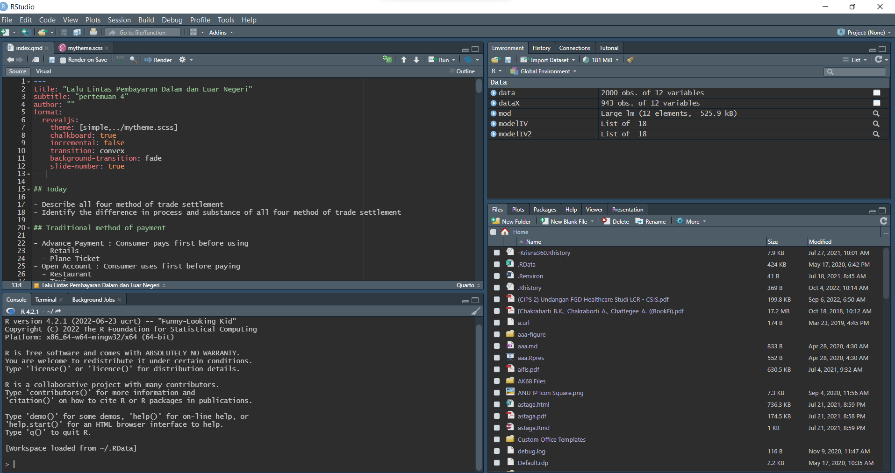
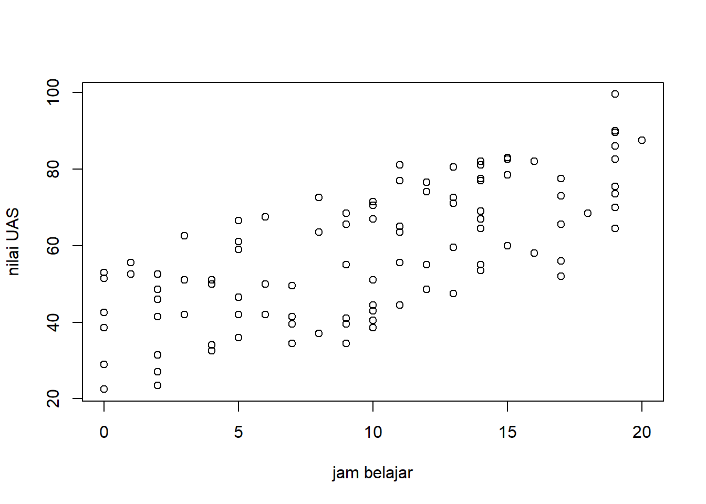
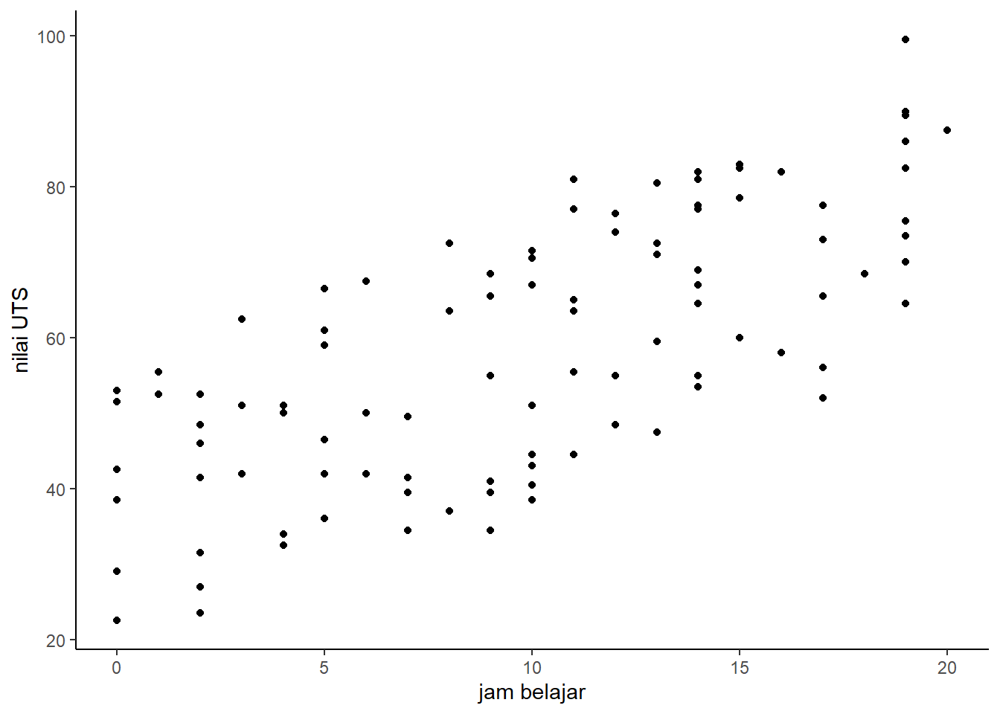
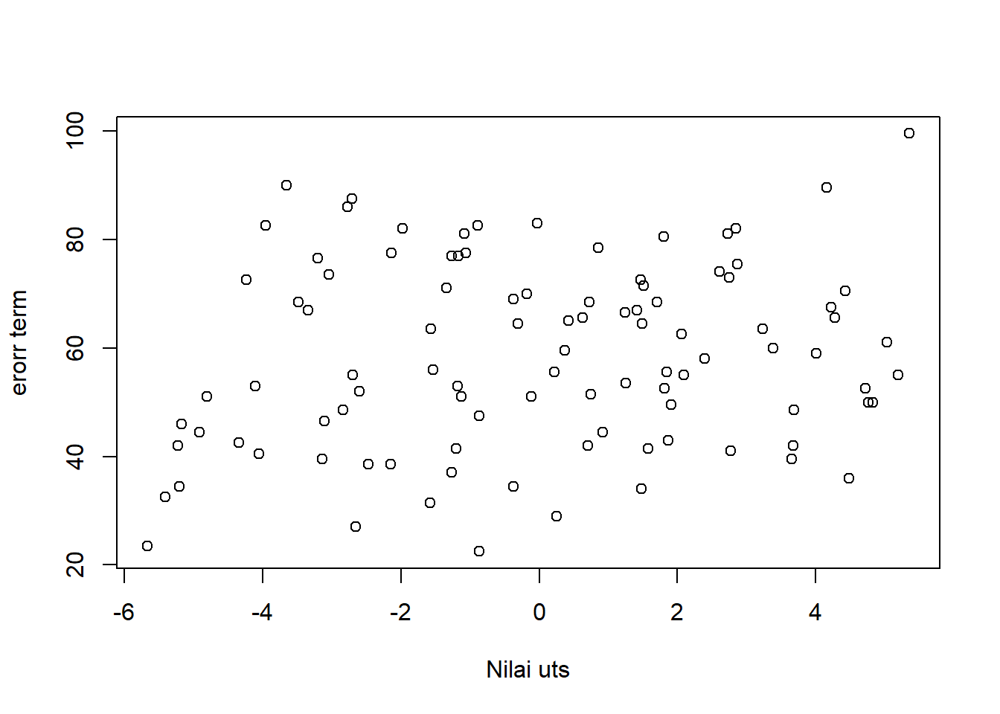
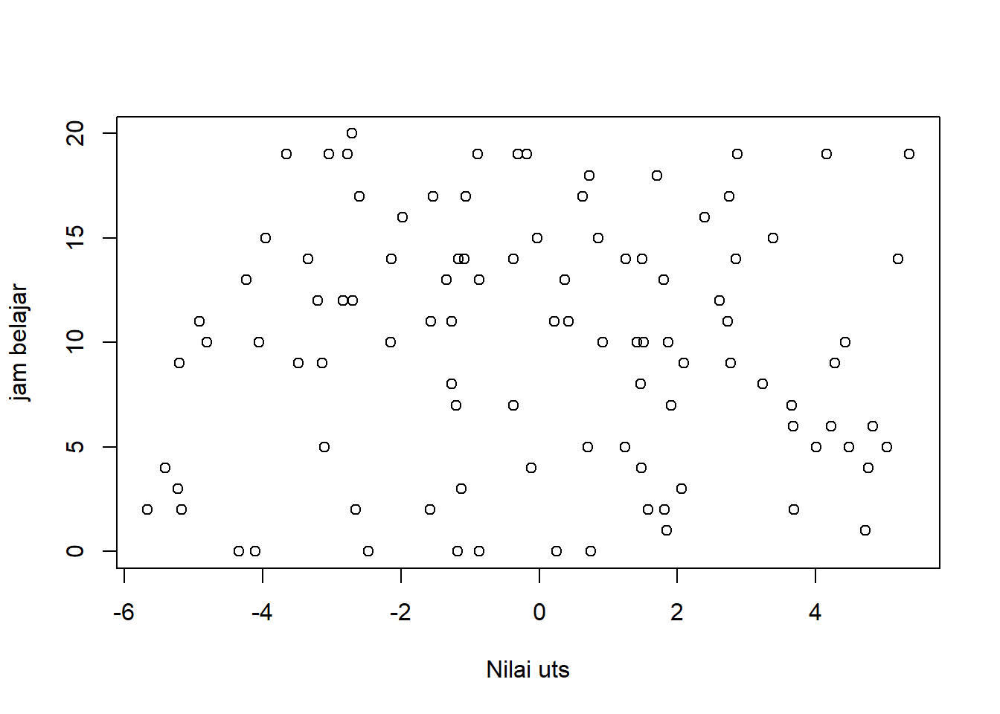

Regresi dengan R dan RStudio
Pendahuluan
Regresi itu hal mendasar. Banyak riset menggunakan regresi dan variasinya.
R dan RStudio is an amazing dan gratis! Apapun bisa digoogle, dan ada package untuk semua metode!
Anak-anak PIWAR diajarin R. Kali aja ada yang mau thesis pake R, dosennya harus udah paham. Bikin penelitian pake R mungkin meningkatkan kans mahasiswa untuk nulis bareng dosennya.
Persiapan
Di laman ini, anda akan diantarkan ke step-by-step menginstall r di komputer anda. Prosesnya mudah kok, apalagi kalau anda sudah pernah install aplikasi di komputer sebelumnya. Hal-hal yang perlu anda install antara lain adalah R, RStudio dan package-package yang diperlukan.
Minimal saya harap anda paham bagaimana cara berselancar di internet. Kami harapkan anda juga memahami struktur folder di komputer anda. Anda tau di mana lokasi file yang anda download, gimana cara bikin new folder, dan bagaimana cara navigasi my computer di Operating System masing-masing.
Jangan lupa restart komputer setelah install dan jangan lupa download data-data latihannya sebelum mulai. Tapi kalo anda punya data sendiri buat nyoba-nyoba pastinya lebih seru.
Intinya anda perlu:
- Install R dan RStudio serta packages yg penting.
- Install Quarto.
- Bikin akun github.
Install R dan RStudio
CARA DOWNLOAD R (80 MB)
- Buka website cran.r-project.org/
- Pilih “Download R for Windows”
- Pilih “install R for the first time” di kolom base
- Pilih “Download R-4.2.1 for Windows” di paling atas.
- Kalo udah di download, install app nya di laptop okeng.
CARA DOWNLOAD RSTUDIO (190.50 MB)
- Buka website rstudio.com
- Pilih “DOWNLOAD” di sebelah SUPORT, DOCS & COMMUNITY (Pojok kanan atas)
- Scroll ke bawah, pilih “Rstudio Dekstop Free Download”
- Pilih “DOWNLOAD RSTUDIO FOR WINDOWS” (yang ada icon windows nya)
- Kalo udah di download, install app nya di laptop yaa.
Install R
R adalah program yang digunakan untuk menghitung. Dia sendiri bentuknya agak gak jelas. Jika anda cuma punya R, anda harus ngerun R pake console gitu. Sangat tidak intuitif. Nulis scriptnya juga bisa, tapi pake text editor yang juga kurang intuitif. Tapi bagaimanapun juga, programnya harus ada di komputer anda.
Cari installernya pakai google
Cara paling gampang install r adalah dengan menggunakan google search, lalu ketik install r for windows jika laptop anda windows. Anda akan diantarkan ke installer r untuk versi windows 64 bit. Komputer jaman sekarang rata-rata 64 bit. Jika komputer anda adalah 32-bit, maka harus install versi r yang jadul. Google aja install r for windows 32-bit.
Sebagian besar komputer jaman sekarang pasti pake 64-bit. Tapi jika anda gak yakin, cara ngecek bit anda bisa dilihat di sini.
Datang langsung ke website r-nya
Tanpa google juga bisa kok. langsung aja datang ke websitenya. Ada beberapa mirror download yang bisa dipilih, tapi untuk Indonesia, lebih baik pakai servernya Universitas Syiah Kuala yang bisa diakses di sini. Anda cukup download base. Saat tulisan ini dibuat, versi R yang terbaru adalah R-4.2.1 for windows. Ini adalah versi r untuk windows 64-bit.
Cara manapun yang anda pilih, anda akan diantarkan ke lokasi yang kurang lebih sama. Anda akan download installernya yang besarnya sekitar 78 Megabyte. Tunggu aja sampai selesai. Nanti nama file-nya R-4.2.1-win.exe. Pastikan anda familiar dengan lokasi file yang anda download ini di folder anda.
Kalau sudah ada installernya, anda tinggal dobel klik file-nya lalu next-next sampe selesai. Selamat, anda sudah berhasil menginstall r
Install RStudio
RStudio ini bukan program yang anda pakai untuk hitung. RStudio disebut juga dengan IDE (Integrated Development Environment). Dia ini lebih ke software yang anda gunakan untuk mengakses R dengan lebih intuitif. Di RStudio anda akan bisa memanage package lebih mudah dan menulis script r dengan lebih intuitif. Intinya, RStudio adalah software yang anda pakai untuk berinteraksi dengan R. Ketika anda regres, anda menulis kodenya di RStudio, akan tetapi yang nge-run regresi anda adalah R.
Cari Installernya pakai google
Yup, anda juga bisa download installernya lewat google dulu. langusng aja google download RStudio, maka pilihan pertamanya adalah si RStudio ini. Pilih pilihan yang tulisannya “Download RStudio IDE” (pilihan paling atas) untuk ke laman RStudio, lalu pilih RStudio desktop yang free. RStudio akan memilihkan installer yang pas untuk anda. Langsung aja tekan tombol biru besar yang tulisannya “Download RStudio for Windows”.

RStudio filenya lebih gede dari R, sekitar 182 MB. Installernya namanya RStudio-2022.07.2-576.exe. angka-angka itu nama versinya. Jika anda download lagi di masa depan, mungkin nama versinya berubah karena ada update.
Setelah anda sudah selesai download, double klik installernya lalu next-next aja sampe beres. Jangan lupa create shortcut jika anda lebih suka pakai shortcut di desktop untuk mengakses program anda.

Interaksi dengan RStudio
RStudio punya tampilan seperti di bawah ini:

Jangan kaget jika tampilan RStudio anda tidak persis seperti ini. Tampilan saya keliatan seperti ini karena saya sedang mengerjakan sesuatu di RStudio saya. Jika anda baru buka pertama kali, pasti masih kosong. Yang penting adalah anda bisa lihat ada 4 kuadran di RStudio.
Kuadran 1 (kiri atas) akan saya sebut script. Ini adalah tempat anda menulis script untuk kode anda. Coba arahkan mouse anda ke kiri atas, ada tulisan
file, lalu pilihnew filelalu pilihR Script. Anda juga bisa pakai shortcutctrl+shift+n. Hal ini akan memunculkan file namannyaUntitled1yang mana adalah R Script anda. Nanti kita bahas di kelas bagaimana mengisi R Script anda. Gampang kok. Tinggal kopas aja.Kuadran 2 (kanan atas) adalah environment window. Di kuadran ini anda bisa lihat file-file yang sudah anda buat dengan R, seperti data dan grafik. Nanti kuadran 2 ini akan penuh sendiri seiring anda berinteraksi dengan RStudio.
Kuadran 3 (Kanan bawah) adalah File window. Di sini anda bisa lihat struktur folder anda maupun membuka file-file gambar. Nanti kita akan bahas di kelas.
Kuadran 4 (kiri bawah) disebut juga dengan console. Di sinilah command-command R anda akan diketik. Ada beberapa hal yang anda bisa coba.
- coba anda ketik
versionlalu enter. Apa yang anda lihat? - Kemudian, ketik
getwd()lalu enter. Apakah anda mengerti apa yang dihasilkan oleh command ini? Apakah anda tau lokasi yang dimaksud? - Anda juga bisa jadikan console seperti kalkulator. coba ketik
1+1lalu enter. - R juga bisa store values. misalnya anda coba ketik
a<-1+1lalu enter. kemudian ketikalalu enter. - Ketik
b<-3*3lalu enter. lalu ketika+b, enter.
Ada banyak yang bisa anda coba, ada banyak sekali command yang anda bisa masukan di console. Namun seperti anda lihat, console lebih digunakan jika anda perlu memasukkan kode yang pendek-pendek. Untuk kode yang panjang, kita akan lebih sering menggunakan R Script.
Nah, contoh kode yang ada di kelas itu semua dapat di-run di RScript ini. kopas aja kode yang ada di kelas ke R Script anda, lalu tekan ctrl+a untuk ngeblok seisi r script lalu tekan run (ada di kanan atas dari area r script). Atau pake ctrl+enter untuk shortcutnya.
Nanti kita bahas di kelas bagaimana menulis kode di R Script. Namun untuk sekarang, mari kita persiapkan komputer anda untuk penggunaan di kelas. Anda memerlukan beberapa package yang harus diinstall.
Install package
R sendiri adalah sebuah software komputasi yang elegan namun fungsinya cukup terbatas. Untuk menggunakan R dengan lebih mudah, banyak peneliti membuat packages atau tambahan software agar R bisa digunakan dengan lebih intuitif. Beberapa packages ini perlu diinstall 1x saja, tapi untuk setiap penggunaannya perlu dipanggil dengan command library.
Sebelum kita mulai di kelas, ada beberapa packages yang perlu anda install. Cukup kopas kode berikut ini ke console anda:
install.packages(c("tidyverse","WDI","readxl","writexl","modelsummary"))Jangan lupa tekan enter dan pastikan ada sambungan internet.
Ada 4 packages yang diinstall di atas: tidyverse adalah package yang digunakan untuk data cleaning. WDI adalah package yang digunakan untuk menarik database-nya World Bank yang namanya World Development Indicators. readxl adalah package yang kita perlukan untuk membaca data excel ke r. kableExtra adalah package untuk membuat tabel.
Untuk sekarang, cukup kita install dulu. Nanti pakainya pas di kelas.
Download data latihan
Jangan lupa untuk download file-file excel yang akan kita pakai untuk latihan. File-file tersebut dapat diakses di sini.
Install Quarto
Quarto adalah versi upgrade dari rscript. Dengan file quarto (ekstensi .qmd), anda bisa menggabungkan kode R anda dengan tulisan, dan dirender menjadi html, pdf dan word sekaligus, setelah itu anda dapat edit wordnya. Tapi kekuatan quarto yang sebenarnya (menurut saya) adalah render html-nya.
Quarto dapat didownload di sini. Atau google aja “download quarto” Quarto dapat digunakan dengan VSCode, Jupyter, dan text editor lainnya. Tapi paling gampang sih kita pakai RStudio.
Bikin akun github
Github aslinya adalah sebuah website untuk hosting code projects (disebut juga dengan repository. Dia berfungsi sebagai version control dan melakukan kolaborasi terutama untuk project open source. Singkatnya, semua programer pasti pernah pake github. Namun github bisa menawarkan hosting mini untuk website anda.
Buka github dan buat akun baru di sini. Pilih username yang cukup profesional dan mudah diingat. Username ini akan jadi bagian dari url website anda. Kode verifikasi akan dikirim ke email anda. kalau disuruh pilih paket, pilih yang free.
Packages
Hari ini kita akan menggunakan beberapa packages
Theory
R merupakan bahasa pemograman yang sebenernya cukup general tapi seringkali digunakan untuk analisis statistika. Ada banyak juga fungsi R yang ditulis orang lain yang harus kita download dan panggil dulu supaya berfungsi, dan piranti lunak tulisan orang lain ini kita sebut package. Hari ini kita hanya akan coba pakai regresi linear / linear model, tapi jika analisis anda menggunakan metode tertentu, biasanya ada package yang mungkin sudah mengcovernya. Misalnya, saya sendiri sering pakai package ARDL, VAR, fixest, dan PPML.
R juga sudah cukup mature sehingga tidak sulit menggoogle command yang anda perlukan. Anda bahkan bisa minta tolong AI (misalnya copilot) untuk nulisin kode yang anda inginkan, tapi jgn lupa dicek dan jangan langsung percaya soalnya AI kadang suka halu.
Regresi multivariat punya bentuk umum seperti berikut:
\[ y = \beta_0 + \sum_{i=1}^n \beta_i x_{i} + \varepsilon \tag{1}\]
di mana \(y\) adalah vektor yang berisi elemen variabel endogen dan \(x_i\) adalah vektor-vektor yang berisi elemen variabel eksogen. \(\varepsilon\) adalah residual yang kita asumsikan iid. Tentu saja pada kenyataannya semua asumsi ini bisa salah, tapi saya yakin bapak ibu sudah ahli soal OLS dan turunannya. Kita akan fokus nge-run persamaan ini pakai R.
Pakai R
Meskipun anda diminta melakukan banyak install, tapi semua program tersebut akan kita gunakan melalui RStudio. RStudio adalah IDE (Integrated Development Environment), atau sebuah piranti lunak yang digunakan untuk menjalankan beberapa program dengan lebih intuitif. Ibaratnya, R itu mesin mobil, dan RStudio itu setir dan pedal. Yang jalan mesinnya tapi kita kontrol melalui dashboard mobil.
Pada prinsipnya, menjalankan regresi di R terdiri dari beberapa step:
- Set working directory.
- Membaca data dari suatu bentuk ke dalam lingkungan R.
- Membuat visualisasi
- Melakukan regresi
Set working directory
Saya mengasumsikan anda familiar dengan struktur folder di komputer anda. Setiap project saya yang menggunakan R biasanya saya taruh di 1 folder semua. Kita mulai dengan membuat 1 folder kerja (working directory). Kemudian folder kerja tersebut kita isi dengan data yang mau dikerjakan.
Folder ini boleh ditaruh di mana aja dan dinamakan apa saja, yang penting anda inget letaknya di mana. Saya sendiri biasanya naruh ga jauh-jauh dari C:/ biar cepet navigasinya. Biasanya saya menghindari nama folder yg panjang-panjang dan saya juga menghindari pake spasi.
Buat aja folder baru, misalnya dinamain “latihan” gitu. Kemudian isi folder tersebut dengan data yang mau anda kerjakan. Dalam hal ini, saya akan mengisi folder tersebut dengan “latihan2.xlsx”, “latihan3.xlsx” dan “latihan4.xlsx” dari google drive saya. Tentu saja jika anda punya data sendiri silakan dipakai.
Kemudian langkah pertama kita adalah memberi tahu R bahwa folder tersebut adalah working directory kita. caranya adalah, misalnya working directory anda ada di “C:/latihan”, ketik command berikut ini di console:
setwd("C:/latihan")Jangan lupa dienter.
Tentunya jika working directory anda bukan di situ ya diganti aja sesuai letak folder anda. I assume you’re familiar with your own machine at this point.
btw anda bisa cek working directory saat ini dengan command getwd().
Jika sudah selesai ngerun setwd(), maka langkah selanjutnya adalah mengklik tanda roda gigi (more) di kuadran kanan bawah (files) lalu pilih “go to working directory”. Di sana anda akan melihat data-data yang tadi anda taruh di working directory. Jika ini sudah dilakukan, maka kita selesai memberi tau R bahwa inilah folder kerja kita. Semua output kode kita akan muncul di folder ini.
Mengisi R Script
Jika sudah berhasil maka langkah berikutnya adalah membuat R script. R script ini seperti do file kalau di Stata. Anda bisa membuatnya dengan menekan ctrl+shift+N atau klik file \(\rightarrow\) new file \(\rightarrow\) R script. R scriptnya akan muncul di kuadran kiri atas. Di sinilah semua kodingan kita akan kita taruh.
R Script adalah file yang isinya teks yang akan muncul di working directory anda setelah di-save. Rscript sangat berguna untuk mengingatkan kita kodingan apa saja yang kita lakukan di artikel / project tersebut. Biasanya proses publikasi jurnal bisa lama banget dan back and forth berkali-kali. Kita kadang lupa dan pas disuruh revisi / konfirmasi kita harus inget lagi hal-hal apa aja yang kita run di artikel tersebut. Kita bisa baca r scriptnya.
Lebih penting lagi, r script bisa dikerjakan oleh lebih dari 1 orang. Rscript anda bisa dibaca orang lain dan orang lain itu harus langsung tau anda ngapain aja sehingga dia bisa mengerjakan bagian dia. Rscript juga sangat penting supaya kerjaan anda bisa direplikasi mahasiswa anda. Beberapa project saya ditaruh di github saya kodingannya sehingga transparan dan bisa direplikasi.
Anyway, Hal pertama yang ditulis di R script adalah setwd() lalu load library yang kita perlukan. Untuk latihan kali ini, silakan load package “readxl”, “tidyverse” dan “modelsummary”. Rscript anda akan jadi seperti ini:
Code
setwd('C:/github/latihanR') # AWAS SETWD-NYA PERBAIKI DULU
library('readxl')
library('tidyverse')
library('modelsummary') # buat tabel regresiJika mau eksekusi rscript anda, pencet ctr+all lalu pencet ctrl+enter atau pencet tombol “run” di kanan atas. Rscript hanya akan ngerun kode yang anda blok dengan mouse atau shift+panah, jadi jgn lupa diblok dulu sebelum run. Tentu saja jika ada line tertentu yg anda run tp ga mau rune yang lain, cukup blok line tersebut.
Oh iya 1 lagi, semua line/baris yang diawali dengan tanda pagar / tanda hash tidak akan dibaca oleh R meskipun anda run. tanda pagar/hashtag ini biasa kita pakai untuk kasih keterangan soal kode kita sehingga kalau kita mau lihat lagi bertahunb-tahun kemudian kita ga lupa.
Membaca data
Langkah berikutnya adalah membaca data. inilah kenapa kita harus load “readxl” karena readxl bisa membaca file excel dengan cepat dan efisien. Mari kita coba load data “latihan2.xlsx” dulu. Anda tinggal masukin kode berikut ini:
dat<-read_excel("latihan2.xlsx")Ganti nama datanya jika data anda punya nama berbeda. Jika data anda ada di sheet tertentu, gunakan ini:
dat<-read_excel("latihan2.xlsx",sheet="nama_sheet")command di atas menaruh latihan2.xlsx ke sebuah obyek bernama “dat”. Nama obyeknya nggak harus “dat”. Kalau anda suka nama lain (misalnya “weleh”), maka tinggal ngetik
weleh<-read_excel("latihan2.xlsx",sheet="nama_sheet")Anda bisa juga ketik command ini di consol lalu di-enter, tapi tentu saja enakan taruh di Rscript, blok, lalu run. Jika sudah di-run, maka obyek ini akan muncul di environment anda di kanan atas. Jika anda klik, anda akan bisa melihat struktur datanya. Anda juga bisa lihat dengan mengetik View(dat) di console lalu enter. V-nya gede yah.
Yang terpenting untuk membaca data excel adalah nama variabel harus ada di paling atas dan cuma terdiri dari 1 baris aja. Jadi ga boleh ada kolom yang merge atau semacamnya.
ngomong-ngomong, data latihan2.xlsx saya itu isinya begini:
Code
dat<-read_excel("latihan2.xlsx")
dat# A tibble: 100 × 3
X S Y
<dbl> <dbl> <dbl>
1 2 61 48.5
2 0 94 53
3 14 29 53.5
4 19 94 90
5 10 81 71.5
6 15 95 82.5
7 11 47 55.5
8 14 82 77
9 0 81 51.5
10 17 28 56
# ℹ 90 more rowsDi obyek “dat” ada 100 data poin dengan 3 variabel, X, S dan Y. anda bisa memanggil masing-masing variabel dengan menggunakan obyek, lalu tanda dolar, lalu nama variabel.
Code
dat$X [1] 2 0 14 19 10 15 11 14 0 17 9 5 8 12 17 12 12 11 5 13 19 2 10 10 2
[26] 18 5 14 6 2 4 18 14 4 0 11 15 7 10 7 16 11 0 0 16 6 19 8 19 9
[51] 13 14 10 3 19 11 10 19 9 19 15 14 2 17 17 20 3 13 13 12 9 10 7 1 19
[76] 4 3 9 17 5 8 14 2 11 2 0 9 14 14 6 5 7 10 0 5 15 13 19 4 1anda bisa menampilkan summary statistics dari data ini dengan command summary().
Code
summary(dat) X S Y
Min. : 0.00 Min. :20.00 Min. :22.50
1st Qu.: 5.00 1st Qu.:35.00 1st Qu.:44.50
Median :10.00 Median :61.00 Median :57.00
Mean : 9.84 Mean :58.18 Mean :58.52
3rd Qu.:14.00 3rd Qu.:81.00 3rd Qu.:71.75
Max. :20.00 Max. :95.00 Max. :99.50 Plotting
Plotting di R bisa ada 2 cara. Anda bisa ngeplot datanya dengan cepat pakai scatterplot dengan menggunakan command plot() seperti ini
Code
plot(dat$X,dat$Y,xlab="jam belajar",ylab="nilai UAS")
hasil plot anda akan muncul di kanan bawah di tab “plots” lalu bisa disave dengan cara pencet export lalu save as image. Anda juga bisa pencet “copy to clipboard” lalu di-paste ke word atau ppt jika mau ditaruh di word or ppt.
Cara ke-2 adalah dengan menggunakan ggplot. GGplot agak ribet commandnya tapi bisa langsung anda save di disc. Begini acaranya
Code
ggplot(data=dat,aes(x=X,y=Y))+
geom_point()+
labs(x="jam belajar",y="nilai UTS")+
theme_classic()
anda bisa langsung save ggplot di atas dengan ggsave:
ggplot(data=dat,aes(x=X,y=Y))+
geom_point()+
labs(x="jam belajar",y="nilai UTS")+
theme_classic()
ggsave("plot_keren.svg")ga harus svg sih. png atau jpg juga bisa. Tapi nanti filenya muncul di working directory anda. Ggplot ini seru karena kostumisasinya tak terbatas. kapan-kapan kita bahas lebih lanjut soal ggplot.
Run the regression
Ngeplot biasanya kita lakukan untuk menunjukkan analisis awal, menunjukkan bahwa ada visible pattern di sana dan menjustifikasi analisis lanjutan dengan regresi. Kalau sudah, saatnya kita melakukan regresi linear. Regresi linear dilakukan menggunakan command lm()
Jika kita menggunakan data “latihan2.xlsx”, maka kita jalankan regresi dengan spesifikasi berikut ini:
\[ Y=\beta_0+\beta_1X+\beta_2S+\varepsilon \tag{2}\]
Code
reg<-lm(data=dat,Y~X+S)
summary(reg) # gunakan summary untuk kasi liat hasilnya
Call:
lm(formula = Y ~ X + S, data = dat)
Residuals:
Min 1Q Median 3Q Max
-5.6677 -2.5026 0.0932 2.0725 5.3520
Coefficients:
Estimate Std. Error t value Pr(>|t|)
(Intercept) 11.13743 0.90463 12.31 <2e-16 ***
X 1.92363 0.05085 37.83 <2e-16 ***
S 0.48907 0.01246 39.27 <2e-16 ***
---
Signif. codes: 0 '***' 0.001 '**' 0.01 '*' 0.05 '.' 0.1 ' ' 1
Residual standard error: 2.975 on 97 degrees of freedom
Multiple R-squared: 0.9703, Adjusted R-squared: 0.9697
F-statistic: 1586 on 2 and 97 DF, p-value: < 2.2e-16Maka hasilnya akan keluar. Tentu saja semua parameter sangat penting, tapi biasanya kita fokus ke coefficients, p-value dan \(R^2\).
Anda bisa menyimpan hasil regresinya dengan format tertentu dengan menggunakan package “modelsummary”.
reg<-lm(data=dat,Y~X+S)
modelsummary(reg,stars=TRUE, output="regresi.html")| (1) | |
|---|---|
| + p < 0.1, * p < 0.05, ** p < 0.01, *** p < 0.001 | |
| (Intercept) | 11.137*** |
| (0.905) | |
| X | 1.924*** |
| (0.051) | |
| S | 0.489*** |
| (0.012) | |
| Num.Obs. | 100 |
| R2 | 0.970 |
| R2 Adj. | 0.970 |
| AIC | 506.8 |
| BIC | 517.2 |
| Log.Lik. | -249.389 |
| F | 1586.117 |
| RMSE | 2.93 |
Anda bisa ganti ekstensinya dengan doc atau xls, tapi personally html paling cantik bentuknya. Tabel htmlnya bisa anda kopas ke excel. Lebih lengkap tentang “modelsummary” bisa dibaca di sini.
Membuat variabel baru / residual
anda bisa membuat variabel baru di dataset anda dengan cara, misalnya,
dat$waw<-dat$X+dat$Swaw-nya bisa diganti nama apa saja.
Tapi untuk kali ini kita akan membuat residual / error term dari hasil regresi kita. Seperti anda ketahui bahwa eror term itu simply
\[ \varepsilon=Y-\beta_0-\beta_1X-\beta_2S \tag{3}\]
Biasanya kita generate error term untuk ngecek apakah dia beneran zero mean dan iid (biasanya nggak wkwkwk). Cara generate error term adalah
Code
dat$u<-resid(reg)Lalu anda bisa cek summary dari residualnya dengan
summary(dat$u)dan ya benar bahwa dia mean zero. tentu saja bisa juga kita plot terhadap X dan Y:
Code
plot(dat$u,dat$Y,xlab="Nilai uts",ylab="erorr term")
Code
plot(dat$u,dat$X,xlab="Nilai uts",ylab="jam belajar")
anda bisa save hasilnya dan lihat apakah error term-nya random.
Final
all in all, R script anda akan berbentuk seperti ini
setwd('C:/github/latihanR') # AWAS SETWD-NYA PERBAIKI DULU
library('readxl')
library('tidyverse')
library('modelsummary')
# Baca data
dat<-read_excel('latihan2.xlsx')
# Plot X dan Y
ggplot(data=dat,aes(x=X,y=Y))+
geom_point()+
labs(x="jam belajar",y="nilai UTS")+
theme_classic()
ggsave("plot_keren.svg")
# regresi
reg<-lm(Y~X+S,data=dat)
summary(reg,output="regresi.html")
# Membuat error
ggplot(data=dat,aes(x=Y,y=u))+
geom_point()+
labs(x="nilai uts",y="error term")+
theme_classic()
ggsave("plot_eror.svg")Jika kode anda benar, maka kita bisa run semuanya dalam 1 tarikan nafas. Kita blok semua dengan ctrl+A lalu run, maka semua akan berjalan dari awal sampai akhir.
What next
Silakan dicoba dengan data anda sendiri, atau coba latihan3 dan latihan4. Kita akan diskusi hasilnya dan bagaimana menaruhnya di paper anda. Jika anda pakai metode yang saya gak familiar, bisa jadi sudah ada packagenya di R. We can discuss dan coba google package apa yang tersedia buat metode anda di R.
Jika ada waktu kita juga bisa belajar bagaimana menggunakan data World Development Indicators (WDI) punya world bank langsung dari R.
Jika ada waktu juga kita bisa belajar bagaimana menggunakan qmd dan hosting website anda sendiri di github seperti punya saya ini
Lanjutan belajar R bisa anda temukan di mata kuliah metodologi penelitian. Saya juga punya workshop utk anak-anak UI ngerun gravity model di sini. Github repo untuk latihan hari ini bisa anda temukan di github saya. Beberapa paper saya yg pake R adalah Amanta and Gupta (2022) yang reponya bisa anda temukan di sini dan Hasran and Gupta (2023) yang reponya di sini. Tentu saja anda juga bisa ke ruangan saya kapan saja untuk berdiskusi.
Oke sekian dulu semoga bermanfaat.